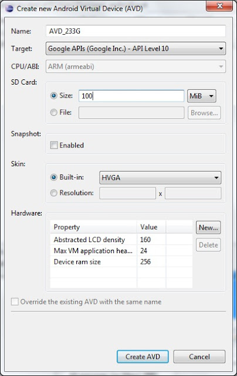
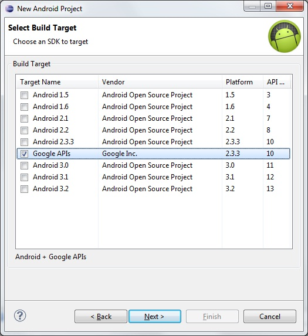
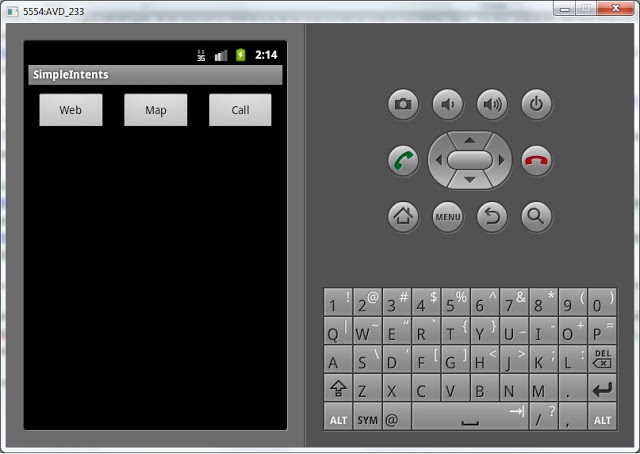
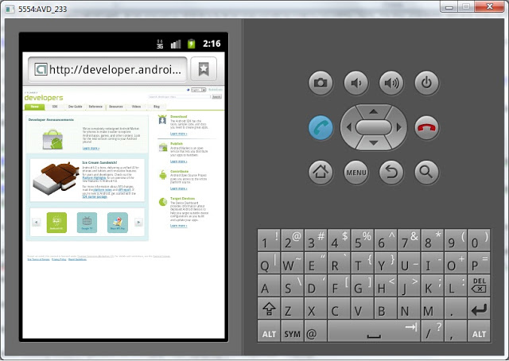
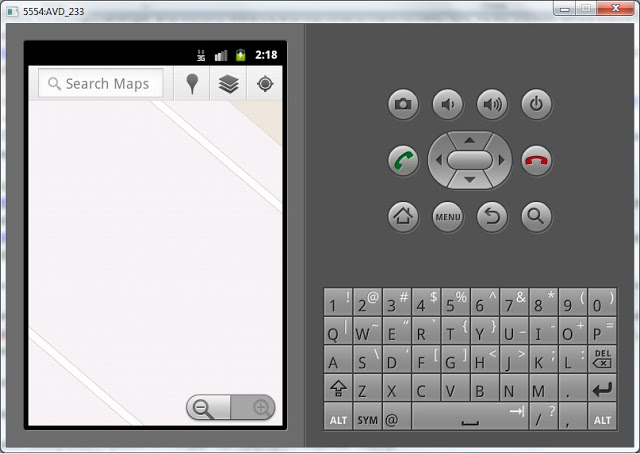
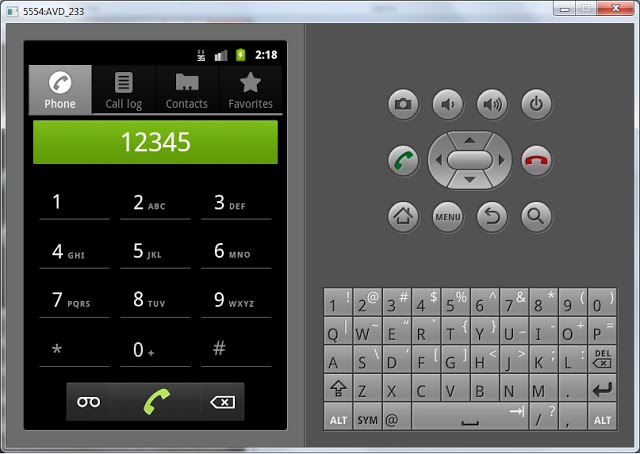

В этом уроке:
- узнаем, что такое Uri и Intent-атрибут data
- вызываем системные приложения (браузер, звонилка, карта)
Мы знаем, что Intent имеет атрибут action. С помощью этого атрибута обычно дается указание действия. Например, просмотр или редактирование. Но действие обычно совершается не просто так, а с чем-либо. Значит кроме указания действия, мы должны указывать на объект, с которым эти действия нужно произвести. Для этого Intent имеет атрибут data.
Один из способов присвоения значения этому атрибуту – метод setData (Uri data) у объекта Intent. На вход этому методу подается объект Uri.
Uri – это объект, который берет строку, разбирает ее на составляющие и хранит в себе эту информацию. Строка, конечно, должна быть не любая, а составлена в соответствии с этим документом RFC 2396. Uri имеет кучу методов, которые позволяют извлекать из распарсенной строки отдельные элементы.
Я создам объект Uri из строки, а в лог буду выводить название метода и (через двоеточие) значение, которое он возвращает. Например возьмем такую строку - http адрес:
Uri uri = Uri.parse("http://developer.android.com/reference/android/net/Uri.html");Смотрим, чего нам возвращают методы:
uri.getScheme(): http
uri.getSchemeSpecificPart(): //developer.android.com/reference/android/net/Uri.html
uri.getAuthority(): developer.android.com
uri.getHost(): developer.android.com
uri.getPath(): /reference/android/net/Uri.html
uri.getLastPathSegment(): Uri.html
Понятия Scheme, Authority, Host, Path и пр. – взяты из RFC дока, ссылку на который я дал выше. Там можно найти их полное описание, понять что они означают и свериться с тем, что нам вернул Uri.
Рассмотрим еще примеры:
FTP
Uri uri = Uri.parse("ftp://bob @ google.com:80/data/files");(Код, написанный выше, идет одной строкой на самом деле. Здесь идут пробелы вокруг @ из-за особенностей разметки)
uri.getScheme(): ftp
uri.getSchemeSpecificPart(): //Этот адрес электронной почты защищён от спам-ботов. У вас должен быть включен JavaScript для просмотра.:80/data/files
uri.getAuthority(): Этот адрес электронной почты защищён от спам-ботов. У вас должен быть включен JavaScript для просмотра.:80
uri.getHost(): google.com
uri.getPort(): 80
uri.getPath(): /data/files
uri.getLastPathSegment(): files
uri.getUserInfo(): bob
Координаты
Uri uri = Uri.parse("geo:55.754283,37.62002"); uri.getScheme(): geo
uri.getSchemeSpecificPart(): 55.754283,37.62002
Здесь уже получилось выделить только Scheme и SchemeSpecificPart.
Номер телефона
Uri uri = Uri.parse("tel:12345");uri.getScheme(): tel
uri.getSchemeSpecificPart():12345
Аналогично, получилось выделить только две части из строки.
Контакт из адресной книги
Uri uri = Uri.parse("content://contacts/people/1");uri.getScheme(): content
uri.getSchemeSpecificPart(): //contacts/people/1
uri.getAuthority(): contacts
uri.getPath(): /people/1
uri.getLastPathSegment(): 1
В этом примере Scheme равен content. Это особый тип данных – Content Provider. Он позволяет любой программе давать доступ к своим данным, а другим программам – читать и менять эти данные. Эту тему мы рассмотрим позднее, и сами будем создавать такой тип данных.
Здесь можно посмотреть какие стандартные Uri поддерживаются.
Примеры показывают, что Uri можно создать из абсолютно разных строк: http-адрес, ftp-адрес, координаты, номер телефона, контакт из адресной книги.
Тип содержимого можно определить по Scheme. И этот же Scheme можно настроить в Intent Filter и отсеивать Intent, только с нужным нам типом данных в Uri, например только http. Этим мы еще займемся позднее, а пока сделаем простой пример, в котором будем формировать Intent с action и data, отправлять его и смотреть, что получится. Попробуем просмотреть следующее: http-адрес, координаты на карте и открыть окно набора номера.
Чтобы посмотреть координаты на карте, необходимо приложение Google Maps. Его нет в стандартных образах Android систем (тех, что вы в SDK Manager скачивали). Нужен образ, название которого начинается с "Google APIs"
Создайте AVD на платформе Google APIs с API Level 10. Назовите его на ваше усмотрение.

Создадим проект. Обратите внимание, используем платформу Google APIs версии 4.0

Project name: P0311_SimpleIntents
Build Target: Google APIs 4.0
Application name: SimpleIntents
Package name: ru.startandroid.develop.p0311simpleintents
Create Activity: MainActivity
Сформируем экран main.xml
<?xml version="1.0" encoding="utf-8"?>
<LinearLayout
xmlns:android="http://schemas.android.com/apk/res/android"
android:layout_width="fill_parent"
android:layout_height="fill_parent"
android:orientation="horizontal">
<Button
android:id="@+id/btnWeb"
android:layout_width="match_parent"
android:layout_height="wrap_content"
android:layout_margin="10dp"
android:layout_weight="1"
android:text="Web">
</Button>
<Button
android:id="@+id/btnMap"
android:layout_width="match_parent"
android:layout_height="wrap_content"
android:layout_margin="10dp"
android:layout_weight="1"
android:text="Map">
</Button>
<Button
android:id="@+id/btnCall"
android:layout_width="match_parent"
android:layout_height="wrap_content"
android:layout_margin="10dp"
android:layout_weight="1"
android:text="Call">
</Button>
</LinearLayout>На экране три кнопки. Первая будет открывать веб-страницу, вторая - карту, третья – звонилку.
Пишем код в MainActivity.java:
package ru.startandroid.develop.p0311simpleintents;
import android.app.Activity;
import android.content.Intent;
import android.net.Uri;
import android.os.Bundle;
import android.view.View;
import android.view.View.OnClickListener;
import android.widget.Button;
public class MainActivity extends Activity implements OnClickListener {
Button btnWeb;
Button btnMap;
Button btnCall;
/** Called when the activity is first created. */
@Override
public void onCreate(Bundle savedInstanceState) {
super.onCreate(savedInstanceState);
setContentView(R.layout.main);
btnWeb = (Button) findViewById(R.id.btnWeb);
btnMap = (Button) findViewById(R.id.btnMap);
btnCall = (Button) findViewById(R.id.btnCall);
btnWeb.setOnClickListener(this);
btnMap.setOnClickListener(this);
btnCall.setOnClickListener(this);
}
@Override
public void onClick(View v) {
Intent intent;
switch (v.getId()) {
case R.id.btnWeb:
intent = new Intent(Intent.ACTION_VIEW, Uri.parse("http://developer.android.com"));
startActivity(intent);
break;
case R.id.btnMap:
intent = new Intent();
intent.setAction(Intent.ACTION_VIEW);
intent.setData(Uri.parse("geo:55.754283,37.62002"));
startActivity(intent);
break;
case R.id.btnCall:
intent = new Intent(Intent.ACTION_DIAL);
intent.setData(Uri.parse("tel:12345"));
startActivity(intent);
break;
}
}
}Я использовал три разных способа создания Intent-а и задания его атрибутов.
В случае btnWeb я использовал конструктор Intent (String action, Uri uri). Он создает Intent и на вход сразу принимает action и data. Мы используем стандартный системный action – ACTION_VIEW. Это константа в классе Intent – означает, что мы хотим просмотреть что-либо. В качестве data мы подаем объект Uri, созданный из веб-ссылки: http://developer.android.com. И если попытаться описать словами наш код, то получится так: этот Intent означает, что мы хотим посмотреть содержимое этой ссылки и ищем Activity, которая могла бы нам помочь.
В случае btnMap использовался конструктор Intent(). Он просто создает Intent. А в следующих строках мы уже присваиваем ему атрибуты action и data. action – снова ACTION_VIEW, а в качестве data мы создаем Uri из пары координат - 55.754283,37.62002. Этот Intent означает, что мы хотим посмотреть на карте указанные координаты.
В случае btnCall используем конструктор Intent (String action). На вход ему сразу подается action, а data указывается позже. action в данном случае – ACTION_DIAL – открывает звонилку и набирает номер, указанный в data, но не начинает звонок. В data – помещаем Uri, созданный из номера телефона 12345.
Три этих способа приводят к одному результату - Intent с заполненными атрибутами action и data. Какой из них использовать - решать вам в зависимости от ситуации.
Т.к. нашему приложению понадобится интернет, чтобы открыть ссылку и посмотреть карту, надо чтобы на вашем компе интернет был.
Также в файле манифеста приложения, на вкладке Permission добавьте элемент Uses Permission и справа в поле Name выберите android.permission.INTERNET. Это даст приложению доступ в интернет. Правда у меня почему-то и без этого все работает … Пока не понял почему.
Все сохраняем и запускаем приложение

Жмем кнопку Web,
открывается стандартный браузер и отображает содержимое страницы по ссылке

Возвращаемся, жмем Map. Отображается карта, которая показывает место, соответствующее указанным координатам.

Возвращаемся, жмем Call. Отображается стандартный экран набора номера и видим, что номер, который мы указывали в data, уже набран. Нам остается только нажать кнопку звонка.

Скорее всего, сейчас есть много вопросов типа «Что будет если … ». На некоторые из них сразу могу ответить и предлагаю вам поэкспериментировать в текущем приложении:
1) Что будет, если указать координаты без приставки geo:
Система ругнется, что не нашла подходящего Activity (см. логи). Т.к. в Activity карты настроен Intent Filter, который (как я думаю) настроен на data c Schema = geo.
Аналогично не сработает звонилка, если указать номер без приставки tel.
2) Что будет, если в координатах оставить geo, но координаты указать кривые?
Если мы попробуем посмотреть, например, такие координаты geo:a,b, то карта запустится, но скажет нам Unable to load the URL. Т.е. данные подошли по Schema, но оказались некорректными.
3) Что будет, если координаты указать верно, но action использовать не ACTION_VIEW, а ACTION_EDIT.
Получается, что мы хотим отредактировать место на карте заданное этими координатами. Но система говорит нам, что она не нашла такое Activity. Потому что приложение Google Maps ожидает Intent с action = ACTION_VIEW и оно сможет показать нам это место на карте. А на редактирование оно не подписывалось )
Необходимо понять, что все приложения в системе заточены под конкретные действия с конкретными типами данных. И если вы попробуете позвонить на адрес сайта, или открыть на карте номер телефона – то система просто не найдет приложения, способные на это.